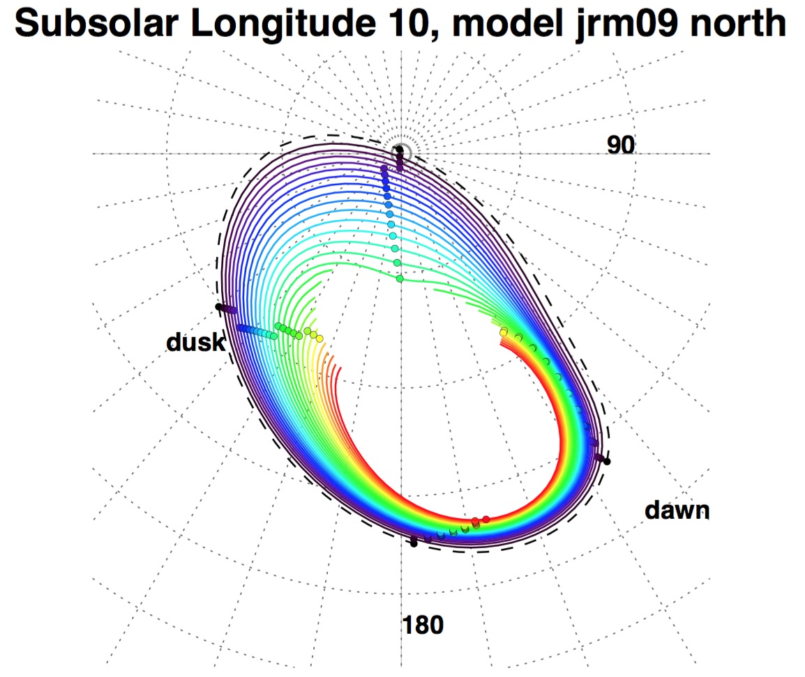

Welcome and thank you for your interest in our Jupiter Ionosphere/Magnetosphere Online Mapping Tool. This tool allows users to magnetically map a given point in Jupiter's ionosphere to the magnetosphere (and vice versa).
---
2020 updates:
May 2020 update: I have recently made some minor changes to my CAN (Connerney et al. 1981) current sheet code, which affects all mapping options except those using the Khurana model. The expected changes in mapping results should be very minor (a few RJ, fraction of an hour LT, or a fraction of a degree in lat/lon). All mapping options except JRM09 use the CAN current sheet model with the VIP4 dipole values (tilt/longitude). The JRM09 flux mapping and field line tracing options use the CAN sheet with the JRM09 dipole values. All information on this page, including the webform results and the downloadable figures and zip files, have been updated accordingly.
2019 updates:
March 2019 update: An IDL function that provides mapping results is now available.
Recent updates to the mapping function include:
* Adding the JRM09 internal field model as an option for the flux calculation mapping (Connerney et al., 2018)
* Adding the option for the user to map a point between the magnetosphere and the ionosphere using the Vogt et al. flux calculation
or by tracing field lines from a global field model (including the Khurana model).
* Mapping is now calculated for the flattened Jovian surface instead of a constant sphere with radius 0.95 Rj.
* (June 2019) Added an option to use the Khurana model with JRM09 (instead of VIP4) as the internal field.
* (June 2019) Fixed an error with the local time mapping that affected the fieldline tracing option.
If you would like to download the most recent mapping function (May 2020) please provide your name and email address and a download link will be emailed to you.
May 2019 update:
PDF figures and text files containing the mapping contours are now available!
These files are meant to help users interpret the results of the IDL mapping function and use the mapping results in creating their own figures or other analysis.
For each model/hemisphere/mapping type, two figures are available:
| Mapping type | Fixed frame | Rotating frame | Contours text file |
| Vogt flux calculation, VIP4, north | Zip file | ||
| Vogt flux calculation, VIP4, south | Zip file | ||
| Vogt flux calculation, GAM, north | Zip file | ||
| Vogt flux calculation, VIPAL, north | Zip file | ||
| Vogt flux calculation, VIPAL, south | Zip file | ||
| Vogt flux calculation, JRM09, north | Zip file | ||
| Vogt flux calculation, JRM09, south | Zip file | ||
| Field line tracing, VIP4, north | Zip file | ||
| Field line tracing, VIP4, south | Zip file | ||
| Field line tracing, GAM, north | Zip file | ||
| Field line tracing, VIPAL, north | Zip file | ||
| Field line tracing, VIPAL, south | Zip file | ||
| Field line tracing, JRM09, north | Zip file | ||
| Field line tracing, JRM09, south | Zip file | ||
| Field line tracing, KK2009*, north | Zip file | ||
| Field line tracing, KK2009*, south | Zip file | ||
| Field line tracing, KK2009 with JRM09*, north | Zip file | ||
| Field line tracing, KK2009 with JRM09*, south | Zip file |
* The Khurana (KK2009) model uses VIP4 as the internal (planetary) field. The "KK2009 with JRM09" option uses the Khurana external field (current sheet, etc.) with JRM09 as the internal field.
Example figure (Vogt flux mapping approach in the northern hemisphere, using the JRM09 internal field model):

In all figures, each colored line maps to a constant radial distance in the magnetosphere (jovigraphic equatorial plane). Contours are drawn in 5 Rj increments, starting with 15 Rj (outer dashed black line), then in solid lines from 20 Rj (black) to 150 Rj (red). Contours are not drawn when the mapped equatorial position is beyond the Joy et al. (2002) expanded magnetopause. For model fieldline tracing, contours are drawn only out to ~60-80 Rj in some cases because the field models give erroneous results at large radial distances. Small circles on each contour indicate the rough position mapping to midnight, dawn, noon, and dusk local times. Dawn and dusk are noted in the figures. All figures for the northern hemisphere are drawn from the perspective of an observer looking down on the north pole. Southern hemisphere figures are drawn from the perspective of an observer looking up at the south pole.
Each zip file contains 36 individual text files, one for each subsolar longitude, containing the latitude and longitude coordinates of the ionospheric contours. The columns are: magnetospheric radial distance (in Rj), magnetospheric local time (in hours), mapped/traced ionospheric latitude (in degrees), and mapped/traced ionospheric longitude (in degrees, SIII lefthanded).
----
If this is your first time using the mapping tool, we recommend that you read the Frequently Asked Questions section at the bottom of this page.
June 2019 updates: The online mapping tool now provides flux mapping results with JRM09 and also provides fieldline tracing results. A name/email are now required so that users of this online tool can be updated when new features are added or other changes are made (i.e. bug fixes).
September 2014 updates: There have been several recent updates to the online mapping tool. In July 2014 we added mapping results obtained with the flux equivalence calculation using VIP4 and VIPAL (see Vogt et al. [2015]). We have also recently corrected an error in the southern hemisphere mapping from Vogt et al. [2011]. Further details on these updates are provided in the FAQ below.
Comments, questions, and other correspondence can be sent to marissav@ucla.edu or mvogt@bu.edu.
This figure shows mapping results for subsolar longitude 180, according to the model of Vogt et al. [2011]. The outer dashed black line indicates the mapping of 15 Jovian radii, or the orbit of Ganymede. The colored contours indicate the mapping of constant radial distance in the magnetosphere, every 10 Rj from 20 (black) to 150 (red). For reference, latitudes are labeled in blue and longitudes are labeled in black. There is an error in the southern hemisphere mapping in this figure and in other figures published in Vogt et al. [2011]. This error has been corrected in the online mapping tool.
How does the mapping model work?
The mapping is done using a magnetic flux equivalence calculation, in which we assume that the flux through a given area in the ionosphere must equal the
flux through the region of the magnetosphere to which it maps. The model is described in detail in Vogt et al. [2011].
How does this mapping tool work?
The user provides a subsolar longitude and a position either in Jupiter's ionosphere or in Jupiter's magnetosphere. The form outputs the location to which
the point maps in the magnetosphere or ionosphere according to the model of Vogt et al. [2011].
This tool does not perform the flux equivalence calculation in real time. Instead, it takes the user inputs and searches for the values in a pre-calculated table. When necessary, we interpolate the coordinates in the table to match the precise user input.
Why does the mapping tool give me multiple sets of results?
The Vogt et al. [2011] mapping model uses a flux equivalence calculation to map points between the magnetosphere and the ionosphere. It requires a model for Jupiter's internal magnetic field to calculate the flux through the ionosphere.
There are three widely used models for Jupiter's internal magnetic field:
How should I cite mappings from this website?
When using the mapping results in a presentation or publication, please cite:
Can I map more than one point at a time?
Not at this time. If you're interested in mapping multiple points, please e-mail marissav@ucla.edu to obtain an IDL routine that performs this mapping.
What distances or local times can I map?
For mapping from the magnetosphere to the ionosphere, you can map all local times and radial distances from 15 to 150 Rj.
Help! I'm getting an error message! or Help! The results I'm getting don't make any physical sense!
Sorry about that :(
We recommend that you go back to the form and check that your inputs are in an appropriate format:
* Subsolar longitude should be in degrees (0-360)
* Magnetospheric radial distance should be in Jovian radii (15-150)
* Local time should be in hours (0.0 - 24.0)
* Ionospheric latitude should be in degrees (-90 to 90, with positive values for the northern hemisphere)
*Ionospheric longitude should be in degrees (0-360)
If that doesn't fix your problem, please e-mail marissav@ucla.edu with your inputs and error message.
What is the subsolar longitude?
The subsolar longitude is the longitude of local noon. It is similar to CML (Central Meridian Longitude), or the longitude in the Earth-Jupiter direction.
Why do I have to provide a subsolar longitude?
The flux equivalence calculation in our model includes the equatorial Bn, the component of the magnetic field normal to the current sheet, which is a
function of local time. Therefore the mapping depends on how the ionospheric region of interest is oriented with respect to the Sun, or local noon. The
effect of the orientation is familiar from images of the aurora at different CMLs (Central Meridian Longitudes).
What are the errors associated with this model?
We have not quantified the errors at this time. However, we expect that the error in radial distance will be small (~few Rj) and that the largest error will
be in local time (up to ~1 hour). For more information, see Vogt et al. [2011].
I used this website 6 months ago to map a point to/from the southern ionosphere, but now I am getting a different answer. Why?
In August 2014 we discovered an error with the southern hemisphere mapping results published in Vogt et al. [2011]. We have corrected the error and the mapping tool provides corrected results. Further details on the error and the difference between the corrected and previously published results have been appended to Vogt et al. [2011].
What is that figure in the top right corner of the page?
This figure illustrates how we built the mapping model used in this tool. It shows how the flux through the ionosphere is linked to
the flux through the magnetosphere. Modified from Figure 4 in Vogt et al. [2011].
Who runs this website?
This website was designed by and is maintained by Marissa Vogt. Comments, questions, and other correspondence can be sent to her at marissav@ucla.edu. Special thanks go out to Michael McGraw-Herdeg for design/UI advice; to Bertrand Bonfond, Benjamin Palmaerts, and Andrew Steffl for testing this webform and the IDL mapping code; and to Masafumi Imai for providing IDL code for the JRM09 internal field model.
Back to Marissa Vogt's homepage
Last updated: May 2020